11,000+
Businesses Upskilled


National Scalability / Crisis Management Operations
This wasn't a marketing campaign; it was a nationwide logistical rescue operation. Between 2018 and 2021, the global market shifted from traditional commerce to digital survival. Foreseeing this collapse, I architected and led an unprecedented digital evangelism infrastructure across Ecuador. What began as a massive physical tour to digitize SMEs transformed, during the 2020 pandemic lockdowns, into a pan-regional cloud operation that sustained thousands of businesses when their physical doors were forced shut.
45-day emergency pivot: physical auditoriums to cloud-scale operations.
11,000+
Businesses Upskilled
56
Conferences Nationwide
8
Global Experts Synchronized
2,500%
Agency Revenue Growth
Move the bus through representative mission stops to visualize the transition from field evangelism to crisis-proof cloud infrastructure.
ACT I: The Physical Frontier (2018-2019)
A year before the global lockdowns, the vulnerability of the traditional micro-economy was critical. Operating under the strategic umbrella of NIC.ec (PuntoEC), I spearheaded "La Ruta de la Digitalizacion". The mandate was brutally clear: "Digitize or Die."
I managed an 11-person team to execute 56 massive conferences across the country. Backed by strategic alliances with the Ministry of Telecommunications (MINTEL), Claro, and local Chambers of Commerce, we bypassed theoretical advice and delivered a rigorous 6-pillar systemic curriculum. Businesses abandoned rented social media dependency and moved into Sovereign Web structures: national domains, independent payment gateways, and cybersecurity frameworks.
Act I KPI: 6,000+ SMEs trained and 600+ sovereign eCommerce platforms deployed.
ACT II: The Black Swan (March 2020)
In early 2020, the theoretical warning became global reality. Physical supply chains paralyzed and retail doors shut indefinitely. The physical route was rendered obsolete by mobility restrictions. The market demanded a remote rescue vehicle.
Operating through AGLAYA Digital Innovation, I engineered an aggressive pivot. In less than 45 days, physical auditoriums were transformed into a high-volume, 100% remote training ecosystem: The 2x2MKT Initiative.
Act II KPI: 45-day operational pivot under lockdown constraints.
ACT III: The Cloud Infrastructure (2020-2021)
To combat pandemic fatigue and operational panic, we did not simply host webinars; we architected a trans-national media production. Through "The IF Show", I merged rigorous B2B training with an interactive format that reduced cognitive friction for business owners under bankruptcy pressure.
The logistical scale was massive: live synchronization across Bogota, Mexico City, Miami, and Spain. I directed a faculty of 8 international speakers with deep instruction in Lean Canvas pivots, automated sales funnels, and enterprise CRM implementation in partnership with Doppler.
Act III KPI: 5,000+ individuals upskilled through 15+ hours of free technical instruction during extreme contraction.
THE LEGACY: Systemic Architect
The combined physical and cloud strategy integrated over 11,000 professionals into digital funnels. To absorb this demand, the systemic architectures I deployed did not just survive pressure; they delivered a documented 2,500% revenue growth for the operating agency.
This is the proof of my capacity as a Systemic Integrator: foresee systemic collapse, architect the infrastructure to withstand it, and lead cross-functional teams to execute at massive scale under extreme crisis conditions.
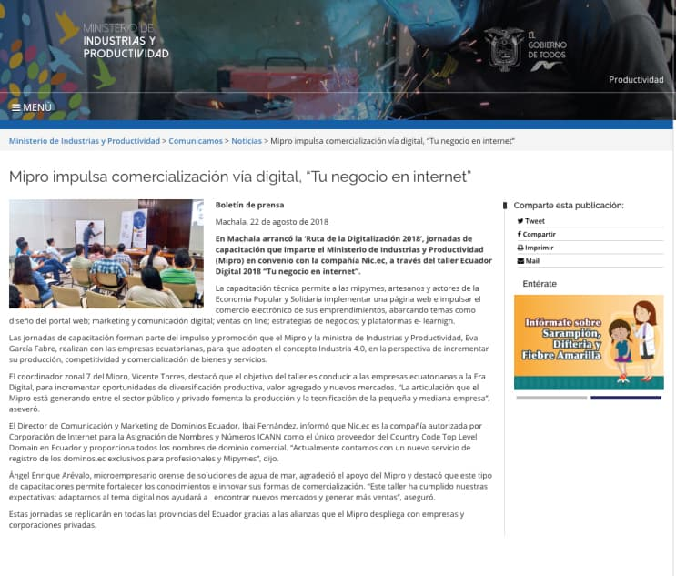
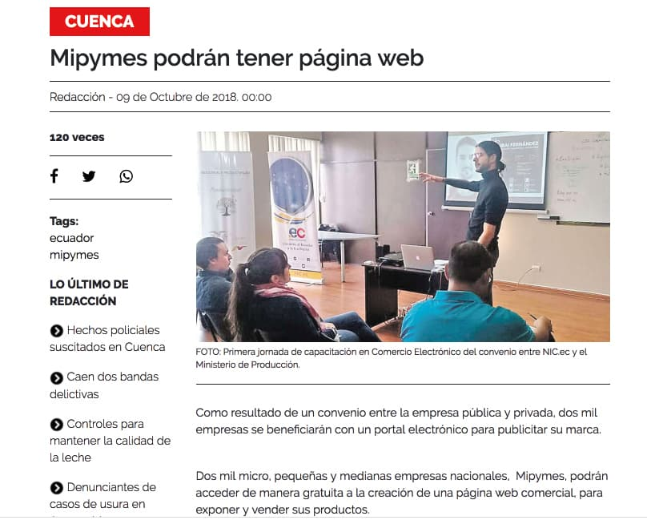
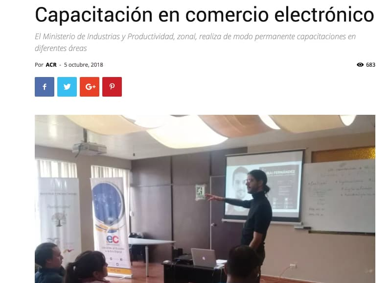
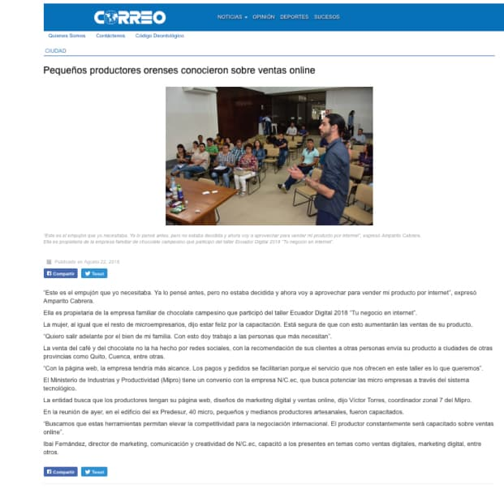
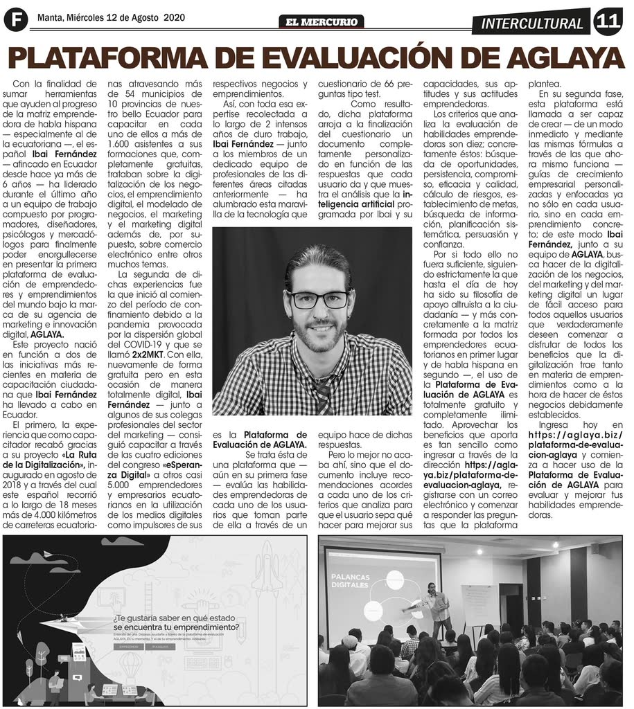
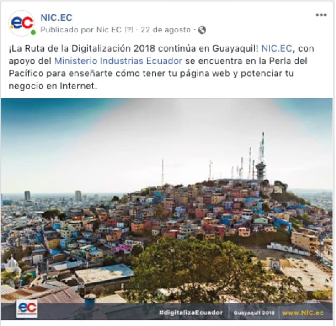
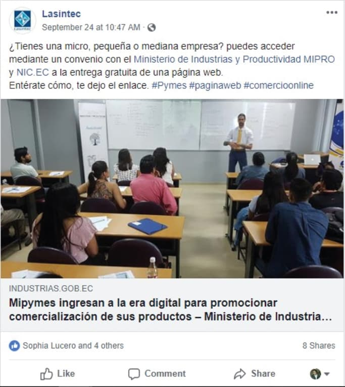
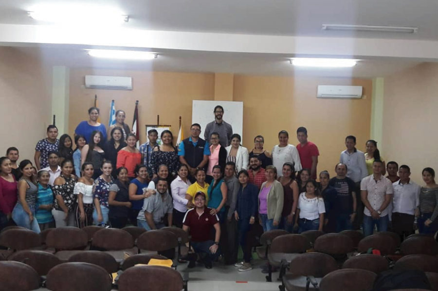
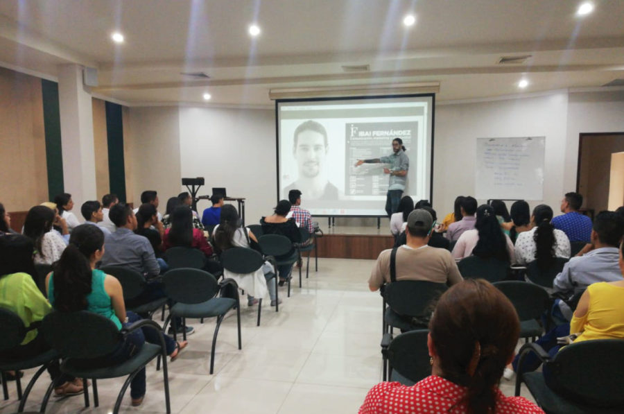
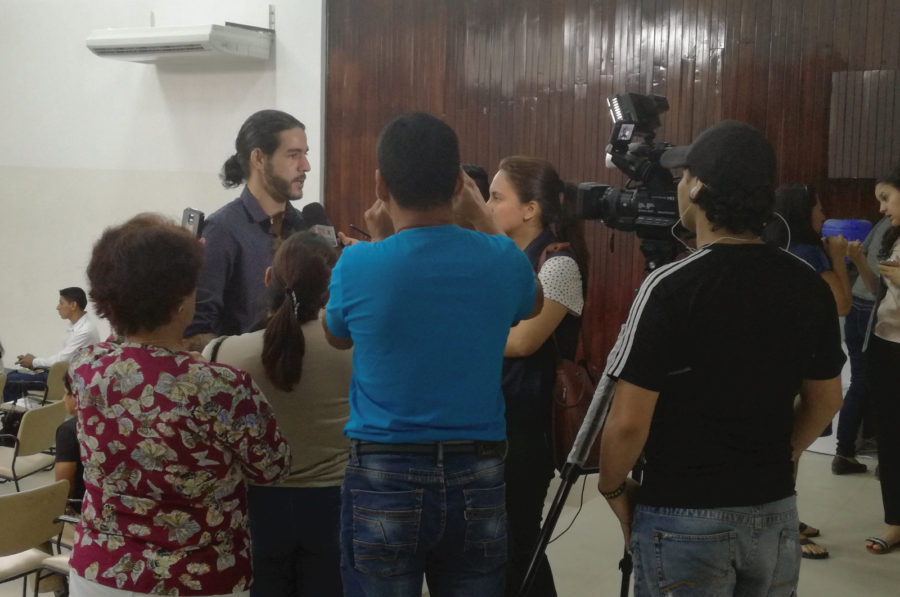
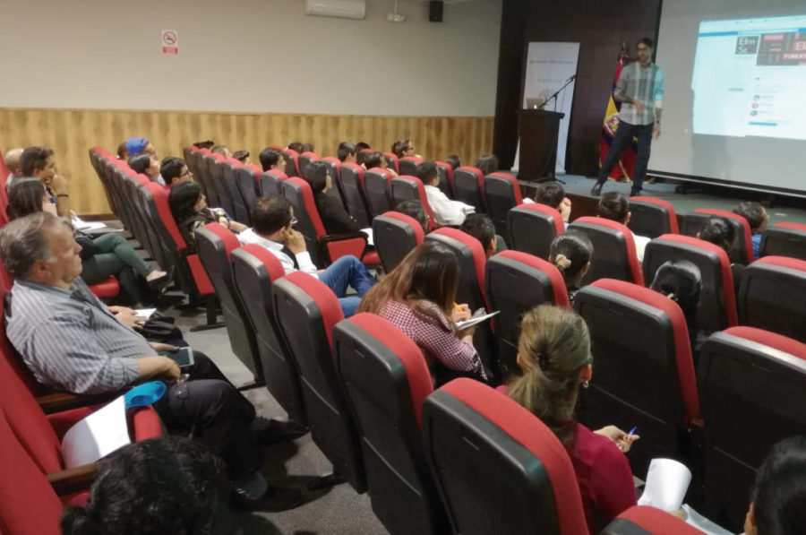
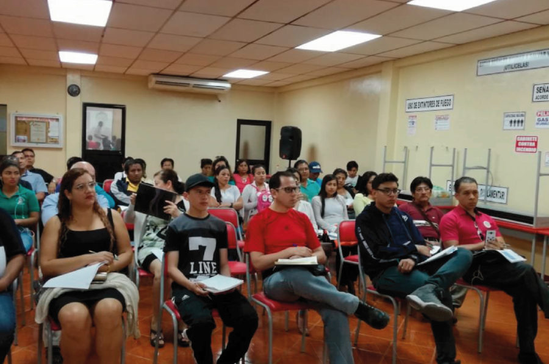
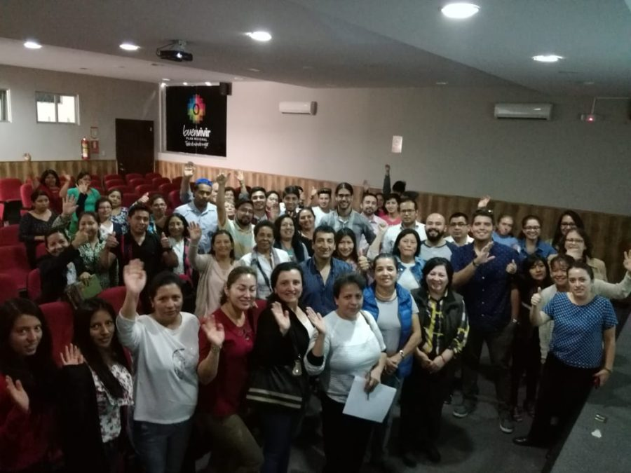
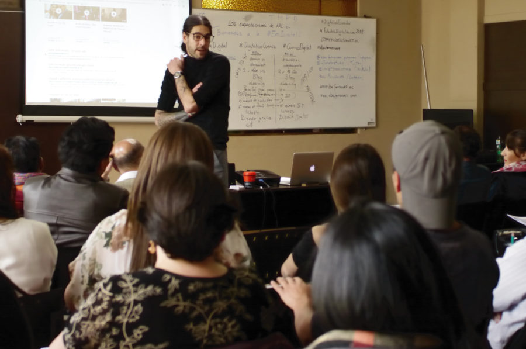
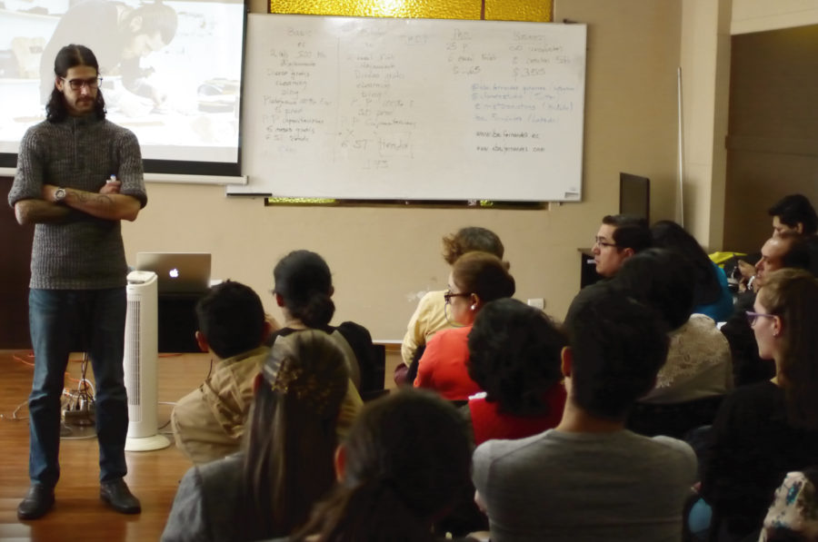
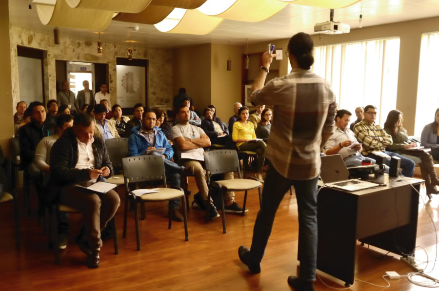
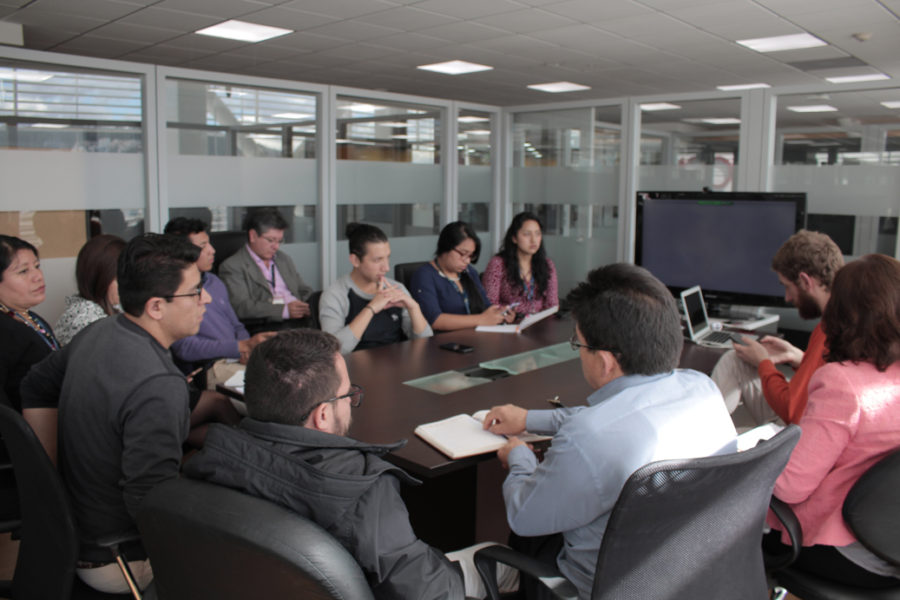
Execution layer supported by public institutions, chambers, and technical partners. This stack enabled national reach with repeatable operating standards.